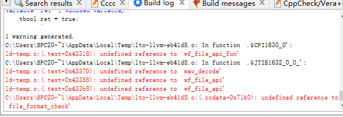
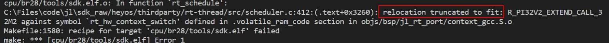
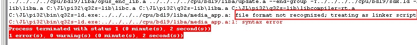
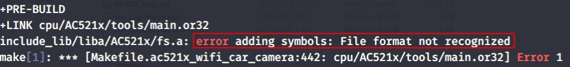
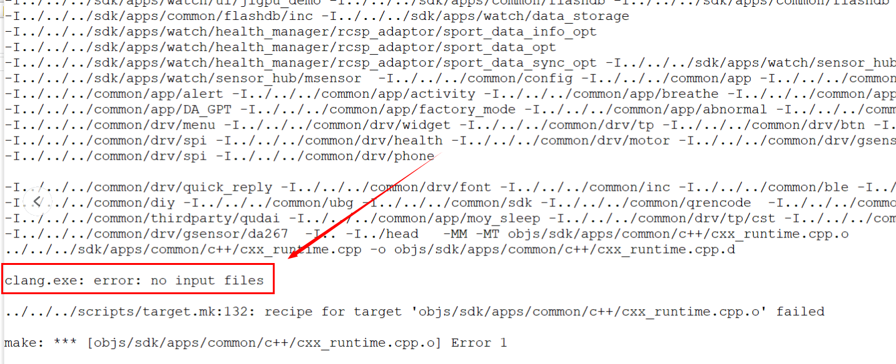
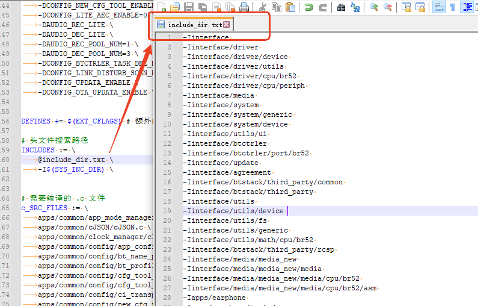
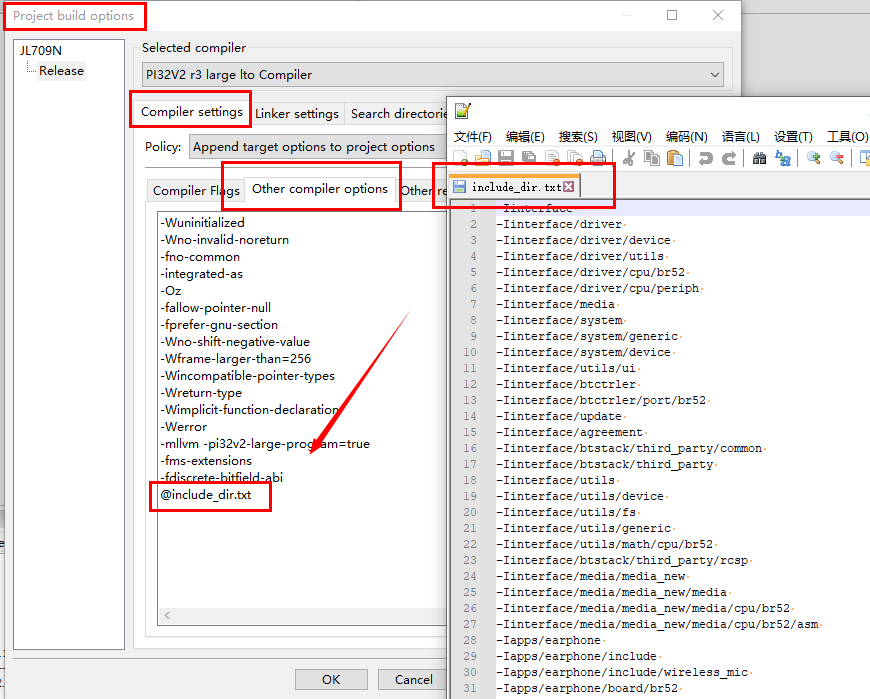
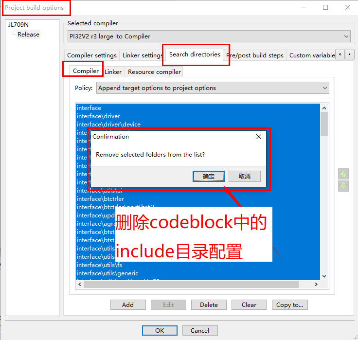
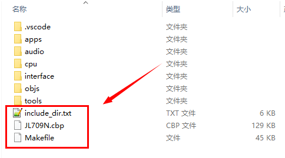

4.1.9. 常见的编译出错原因
4.1.9.1. 提示 Unknown command line argument, unrecognized option 或者 unknown argument
在链接或者编译的时候，提示Unknown command line argument, unrecognized option 或者 unknown argument，意思是传递给编译器或者链接器的命令行参数，编译器或者链接器并不认识。这一般有两种可能：
你修改了编译参数或者链接参数，但是打错了字，写错了参数
你的工具链太旧了，还不支持该参数
处理方式：
更新工具链到最新版本，参考：更新杰理工具链
重新编译链接
4.1.9.2. 提示 undefined reference to
在链接的时候，提示 undefined reference to，类似下图：

这个错误的含义是，未能找到引用的函数。例如，上图中undefined reference to 'wav_decode' 的含义是，我们在代码中，引用了（即调用，或者取地址之类）了函数wav_decode，但是并没有提供这个函数的实现。
这通常有两个原因：
我们确实没有提供这个函数的实现。检查是否输入错了函数名、或者是库函数未更新，缺失了对应的函数。
可能是链接器查找库文件的顺序导致了未能找到，可以考虑使用
--start-group,--end-group来指定库文件的搜索方式。
4.1.9.3. 提示 relocation truncated to fit
在链接的时候，提示 reloaction truncated to fit，类似下图：

这个错误的意思是，对应符号距离引用这个符号的位置，距离太远了，无法表示出来。这通常有下面几种原因：
使用的库函数用的是较短的
call指令（即，未添加-mllvm -pi32v2-large-program=true进行编译的）。 注意要更换为large配置的编译器选项、链接器选项以及对应的标准库。如果对应的符号是函数，可能是这个函数没有指定为对齐到两个字节。注意，每个函数的开头都需要对齐到两个字节。 这个需要在函数标号（如果是汇编文件）前加上
.align 2。或者检查 ld 脚本是否有正确放置。可能是对应的符号未定义。
4.1.9.4. 提示 xxx.a: error adding symbols: Archive has no index: run randlib to add one
在链接的时候，提示 Archive has no index，类似下图：

这个错误的含义是，当前这个xxx.a文件中，没有符号的索引。这个可能是因为生成.a的时候删除了符号索引，或者是其它一些原因。可以自行使用下面的命令添加：
# 如果是在 Windows 系统下
# 打开一个 CMD 窗口，输入下面的命令，给 xxx.a 增加符号索引
C:\JL\pi32\bin\llvm-ar.exe s xxx.a
# 如果在 linux 系统下，则调用 llvm-ar （也可以是 ar）
# 其中， TOOL_DIR 是 linux 下工具链所在的位置
$TOOL_DIR/common/bin/llvm-ar s xxx.a
4.1.9.5. 提示 error: LLVM gold plugin: permission denied
在链接的时候，提示如下图的报错：

这个错误的原因是，链接器在调用工具链目录中的 LLVMgold.dll 时候失败了。这个通常有下面几种可能：
工具链中的文件被破坏。尝试重装工具链后重试，工具链安装参考：开发环境安装说明
杀毒软件或者其它权限控制的软件，限制了链接器调用 LLVMgold.dll。尝试信任
C:\JL目录下的所有可执行程序（递归所有目录）。其它可能原因，尝试更换电脑后是否能解决。
4.1.9.6. 提示 xxx.a: syntax error
在链接的时候，提示如下图的报错：

这个错误的意思是，链接器将 .a 文件当做了链接脚本来处理。而 .a 文件的内容，并不是一个链接脚本。所以就报了语法错误。
这可能有下面几种原因：
错误地指定了链接参数，例如，在 .a 文件开头加了 -T 参数。-T 参数用于指定链接脚本。
.a 文件本身可能被损坏了，并不符合 .a 文件的格式。
Note
一些时候，.a 文件可能里面并没有加入 .o 文件。这个情况下，.a 文件的内容是 !<arch>\n。在 Windows 下，如果 git 设置了 auto.crlf 选项
为 true，则在 clone 仓库的时候，对应的 .a 文件可能会被 git 当做文本文件，并将其中的 \n 替换为 \r\n。导致最终链接失败。
4.1.9.7. 提示 xxx.a: error adding symbols: File format not recognized
在链接的时候，提示如下图的报错：

这个通常是下面几种原因：
在 Linux 下编译或者 WSL 里面编译的时候，未先执行
ulimit -n 8096扩大可打开的文件数，导致链接器大概文件达到上限而失败。 如果是在 Windows 下遇到这个问题，可以考虑参考 如何将缩减 .a 文件里面 .o 文件的个数，将 .a 文件里面多个 .o 文件合并成一个 .o 文件。 （这个问题通常与 -flto 模式且 .a 文件内包含大量 .o 文件有关，可以考虑对该 .a 在编译时的参数，移除 -flto；或者参考上面步骤合并 .o 文件）这个
xxx.a文件，并不是和当前的 SDK 使用同样的指令集，检查是使用杰理的编译器生成的。
4.1.9.8. 提示 clang.exe: error: no input files
在编译的时候，提示如下图的错误：

这个错误通常是由于编译命令长度超过命令行长度限制导致。
当遇到这些报错的时候，可以考虑下面的操作：
可以通过缩短编译命令长度来解决这个问题。
如将include目录通过文件参数的形式传递给clang。
注意：include_dir.txt中每一行结束不能有斜杠符号
\。Makefile方式编译请参考下图：

codeblock方式编译请参考下图：


存储include目录的文件同Makfile,codeblock工程放在同一目录，如下图：

4.1.9.9. 提示 cannot find xxxx.o: No such file or directory
在编译的时候，提示如下图的错误：

这个错误可能是由于codeblock工程所在的路径太长导致。
当遇到这个报错的时候，可以考虑下面的操作：
缩短codeblock工程所在的路径长度， 如将codeblock工程复制到盘符根目录下。
4.1.9.10. 链接脚本自定义的报错
有些时候，会在链接脚本中，添加了一些检查，例如 ASSERT(exp, message) 之类的语句。当exp不成立的时候，链接器就会输出message。
一般来说，这些是为了检查下面一些情况：
确认代码、数据等大小是否在芯片支持的范围内，没有越界（超过物理上限）
确认代码、数据等的（起始地址、或者大小）对齐方式是否满足要求
例如，下面图：

当遇到这些报错的时候，可以考虑下面的操作：
在当前的代码目录下，全局搜索报错的字符串，找到对应的链接脚本（一般是
sdk.ld.c）确认对应的是什么条件不成立，并对应修改